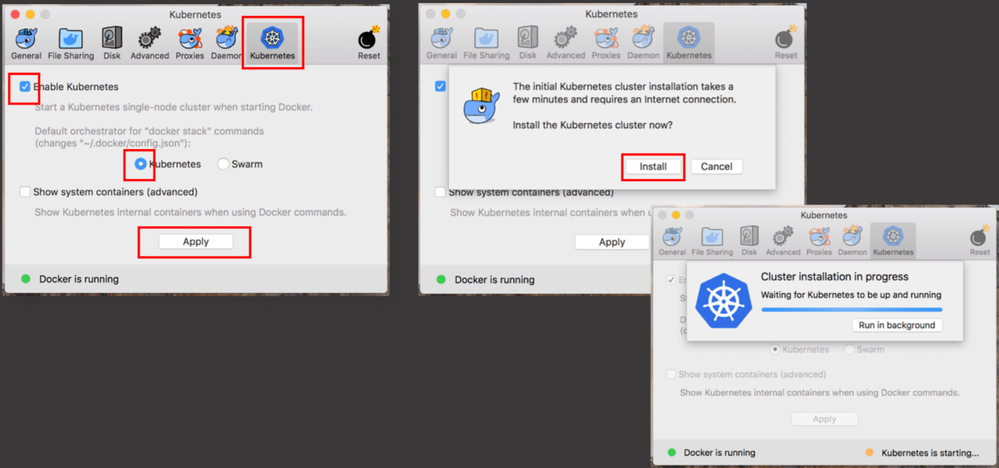

Mojaloop local environment setup for Mac
Local setup on a Laptop or Desktop to run the Mojaloop project.
Setup Introduction
This document will provide guidelines to a technical capable resources to setup, deploy and configure the Mojaloop applications on a local environment, utilizing Docker, Kubernetes and HELM charts.
At this point the reader/implementer should be familiar with Mojaloop's deployment guide. Imported information is contained in that document and as such a prerequisite to this document.
1. Kubernetes
This section will guide the reader through the deployment process to setup Kubernetes within Docker.
If you are new to Kubernetes it is strongly recommended to familiarize yourself with Kubernetes. Kubernetes Concepts is a good place to start and will provide an overview.
The following are Kubernetes concepts used within the project. An understanding of these concepts is imperative before attempting the deployment;
- Deployment
- Pod
- ReplicaSets
- Service
- Ingress
- StatefulSet
- DaemonSet
- Ingress Controller
- ConfigMap
- Secret
1.1 Kubernetes Installation with Docker
kubectl Complete set of installation instruction are available here
brew install kubernetes-cliTo verify if the installation was successful, check the version;
kubectl version
To install Kubernetes with Docker, follow the steps below;
- Click on the Docker icon on the status barr
- Select Preferences
- Go to Advanced
- Increase the CPU allocation to at least 4
- Increase the Memory allocation to at least 8.0 GiB

- Go to Kubernetes
- Select Enable Kubernetes tick box
- Make sure Kubernetes is selected
- Click Apply
- Click Install on the confirmation tab.
- The option is available to wait for completion or run as a background task.

1.2 Kubernetes environment setup:
List the current Kubernetes context;
kubectl config get-contextsor
kubectxChange your Contexts;
kubectl config use-context docker-for-desktopor
kubectx docker-for-desktopContinue setup and configuration from the Kubernetes Dashboard section in the Mojaloop's deployment guide document.